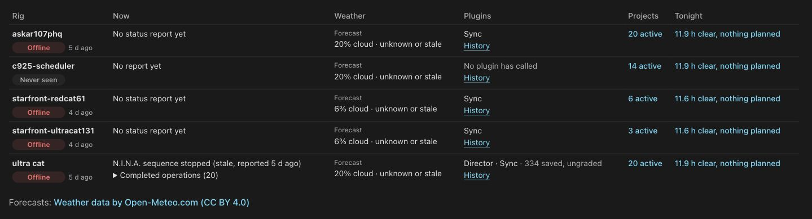
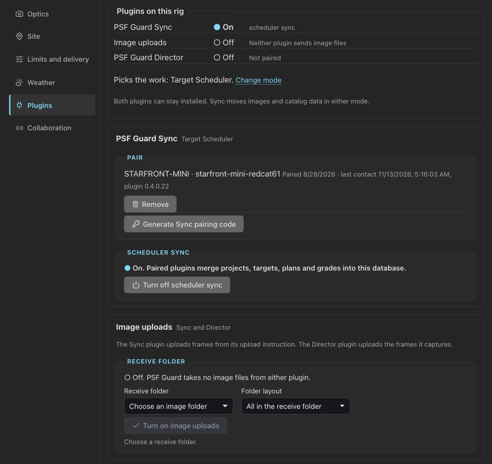
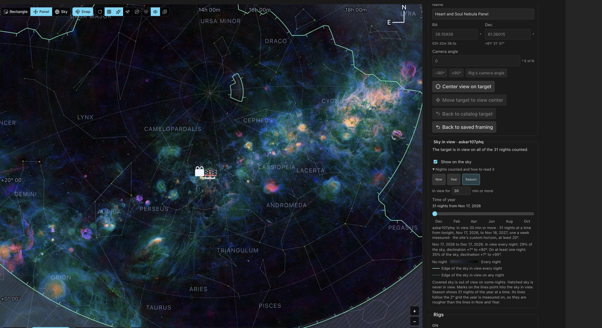
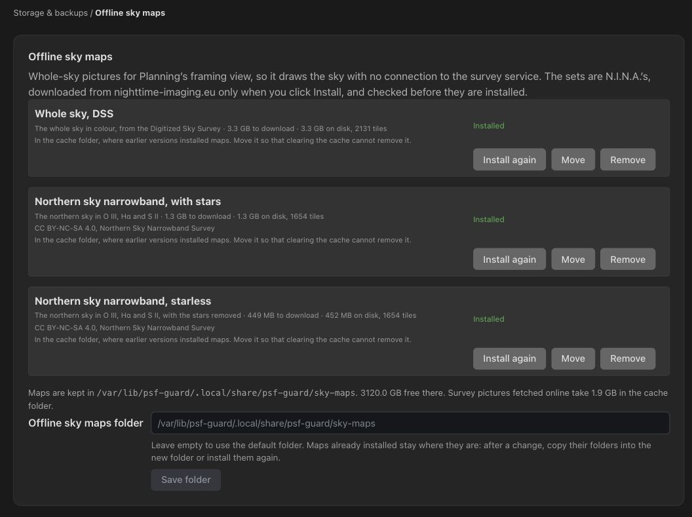
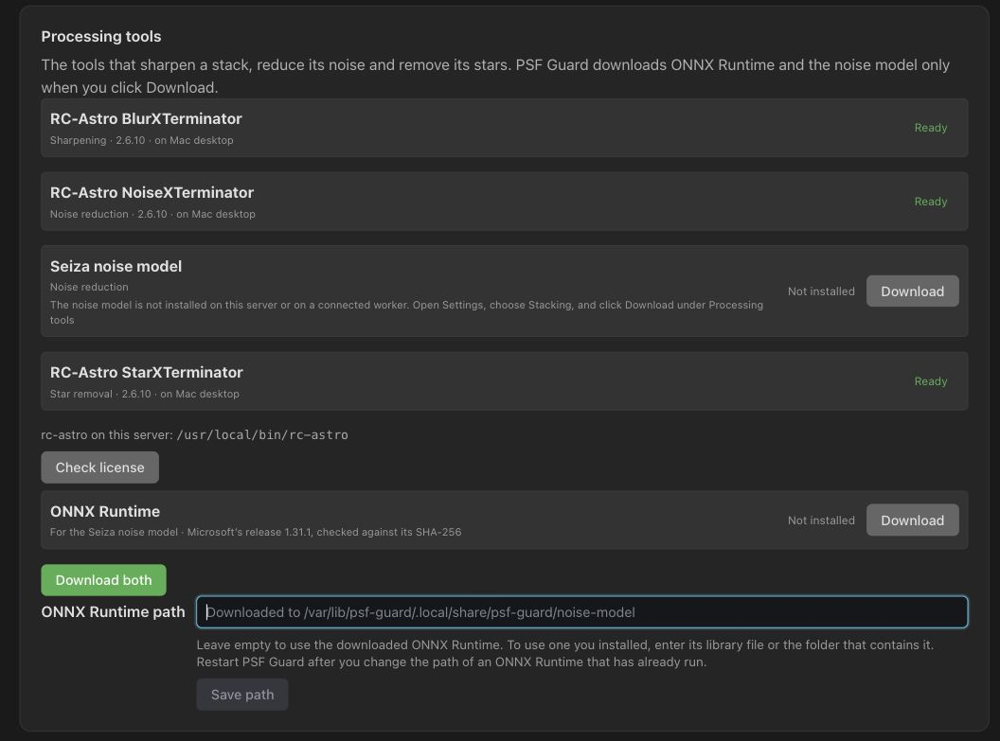

New in 0.14
Follow your N.I.N.A. rigs with Sync, find plans that need activation, check seasonal visibility and choose how to reduce noise in your stacks.
Read before upgrading · All changes in 0.14
Follow your rigs with Sync
Rigs › Live shows connection state, exposures, autofocus, slews and waits from the updated Sync plugin. Weather, plugin history, active projects and tonight's schedule share one table. Sync exposures also appear in the header and on Sky.
Live with Sync does not require Director. The Director acquisition plugin remains early beta. Its warnings stay on the Director controls.

Set up both plugins together
Open a database's Rig setup › Plugins to pair Sync or Director and manage image uploads. Each card explains its own state. Existing pairings keep working.

Pair Sync · Try Director (early beta)
Find plans that need activation
Choose Show › Needs activating in the Library, then open a plan's activation preview there. Plans assigned to a rig with no frames now appear under that rig. Database, Show, search and Sort survive navigation.
Review activation from the Library
Check what your rig can reach
Sky in view overlays the rig's horizon and altitude limits on Framing. Choose Now, Year or Season and a minimum uninterrupted observing time. Year leaves unshaded the sky available on at least seven nights; Season compares 31-night windows.

Install offline sky maps in Settings
Choose a whole-sky image set under Storage & backups › Offline sky maps. Downloads are checked before installation. Maps now live outside the cache; older maps can be moved there.

Choose a noise-reduction provider
Processing groups tools under Sharpening, Noise reduction and Star removal. The Seiza noise model needs no RC-Astro license; download its model and ONNX Runtime when you choose to use it. Existing processing choices keep their meaning.

Choose processing tools · Check worker licenses
Keep catalogs connected and consistent
Pair another PSF Guard server with a code and revoke each peer separately. Merge imported or renamed copies while retaining Target Scheduler's record and plan counts. Local-disk catalogs allow reads alongside writes; Nights reuses sky calculations for faster schedules.
Pair servers · Merge repeated frames
Before upgrading
Back up planning data: older versions cannot open the upgraded planning store. Update stack workers with the server and allow time for stacks and calibration masters to rebuild. See the upgrade notes for plugin requirements and database companion files.